오픈코드와 데빈 무료로 쓰기
월 20~30달러 구독이 부담된다면 오픈코드부터 깔아 보라는 게 이 영상의 출발점이에요. 가입도 카드 등록도 필요 없고, 여러 회사의 모델을 한 프로그램에 연결할 수 있어요. 대신 무료여도 사용량 한도는 있어요.
첫 슬라이드가 영상 전체를 요약해요. 왼쪽 아래 세 칸이 '$0 시작', '한도 있음', '폴더 설정'이고, 오른쪽 숫자 카드 아홉 장이 이어질 순서(무료 소식, 이 화면, 바이브코딩, 설치, 폴더 설정, 오픈코드 해부, 함정·요금, 무료 모델…)예요.
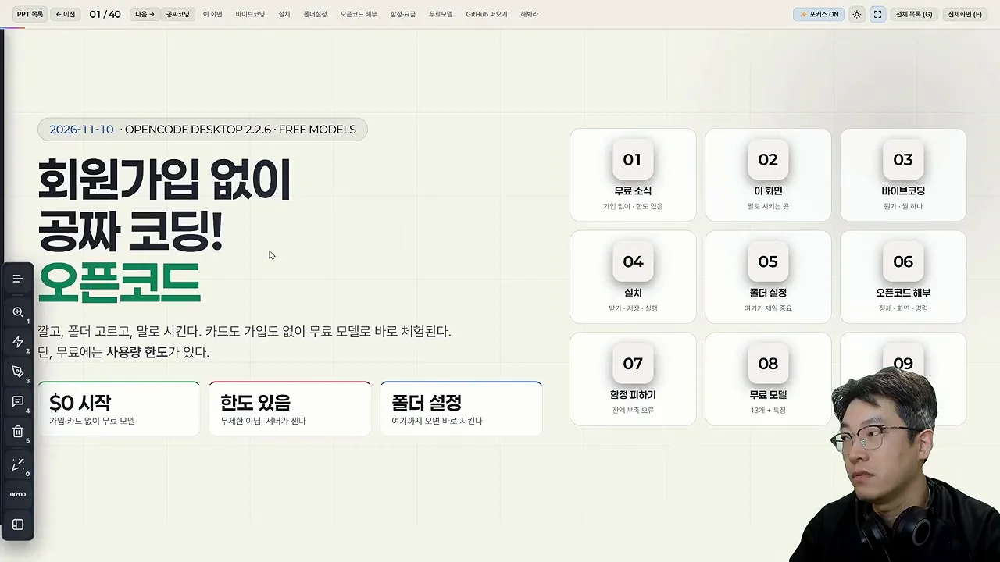
데빈은 로컬 모드로 무료
지난 영상에서 소개한 데빈(Devin) 이야기도 덧붙여요. 계정을 만들고 로그인하면 20달러 요금제 가입 화면이 뜨는데, 건너뛰고 윈도우용 데스크탑 프로그램을 받으면 돼요. 슬라이드 왼쪽 빨간 칸이 '$20 요금제 + 건너뛰기', 오른쪽 초록 칸이 'Desktop 프로그램 + LOCAL'이에요. 프로그램에서 클라우드 대신 로컬을 고르고, 오른쪽 카드처럼 모델을 'SWE-2 Flash Medium'으로 두면 로컬에서 무료로 쓸 수 있어요.
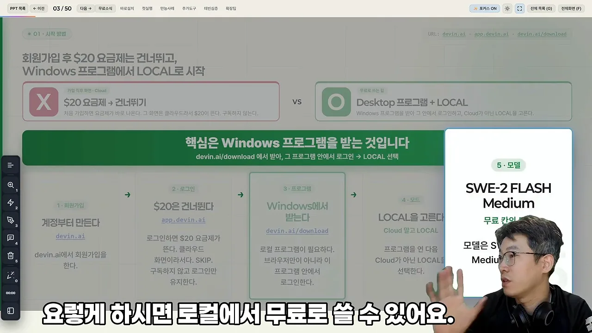
이름을 지을 때도 조심하라고 해요. 지난번에 만든 포모도로 타이머는 상표권 문제가 생길 수 있어서 '자기계발 타이머'로 이름을 바꿨어요. 앱 스토어에 올릴 생각이라면 상표가 있는 이름은 피하는 게 좋아요.
바이브 코딩과 오픈코드 화면
오픈코드는 말로 시키면 파일을 만들고 명령까지 실행하는 코딩 에이전트예요. 프로그램 자체가 오픈소스예요. 소스가 다 공개돼 있어서 안심하고 쓸 수 있고, 이걸 바탕으로 직접 개발할 수도 있어요. 슬라이드는 다섯 칸으로 정리해요. 위 세 칸이 '가입 없이 바로 된다', '프로그램은 오픈소스(MIT 라이선스 · 프로그램 값 0원)', '무료 ≠ 무제한'이고, 아래 두 칸이 '재설치해도 안 풀린다'와 '무료로 체험하고, 손에 익힌다'예요.
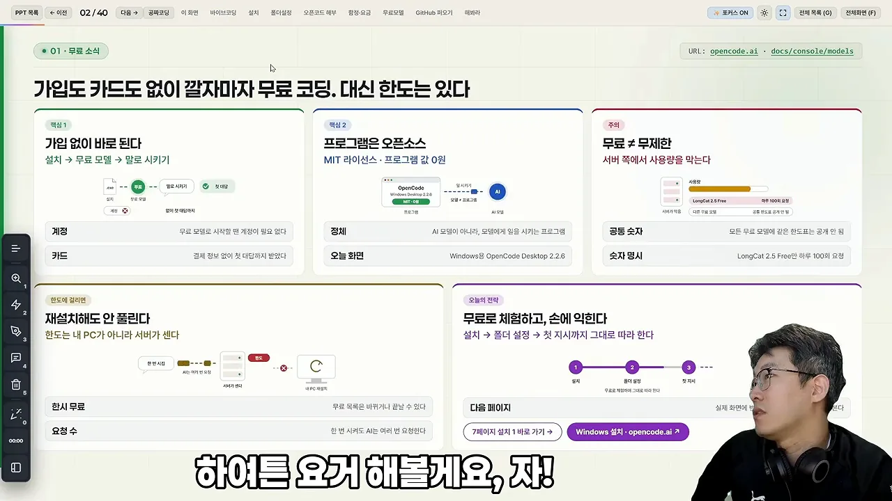
오픈코드 화면 읽는 법
프로그램을 열면 화면은 단순해요. 번호를 따라 보면 돼요. ① 입력창에 말로 시키고, ③ 보내기를 눌러요. ② 입력창 아래에서 모델을 고르고(처음엔 Big Pickle 무료), ④ 작업 폴더 이름과 ⑤ 그 폴더의 실제 위치가 보여요. ⑥ 위쪽 탭이 세션, 곧 대화 한 묶음이에요. ⑦ 맨 아래 줄로 Claude, GPT(Generative Pre-trained Transformer), Gemini 같은 다른 회사 모델도 연결할 수 있어요.
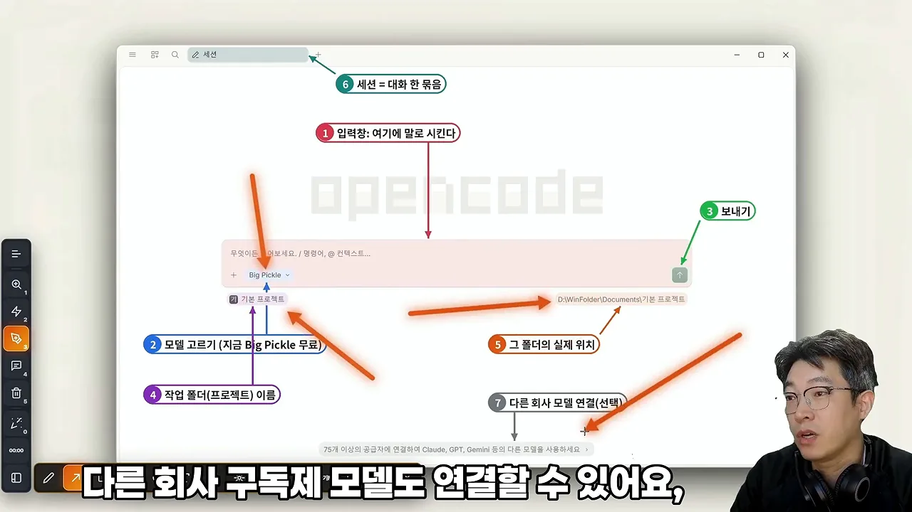
발표자는 Paseo라는 로컬 오케스트레이션 도구에도 오픈코드를 꽂아 쓴다고 해요. 여러 에이전트 창을 관리하는 도구에 오픈코드를 넣고, Grok 봇이 지시를 내려 스스로 코딩하게 세팅해 뒀대요. 호환성이 좋아서 이런 조합이 된다는 이야기예요.
바이브 코딩은 말로 시키는 개발
바이브 코딩은 프로그래밍 문법을 배우지 않고 자연어로 말하면 AI가 그걸 코드로 바꿔 주는 방식이에요. 발표자 본인도 HTML(HyperText Markup Language)을 직접 못 쓴다고 말해요. 확인과 승인은 사람이 해도 되지만 요즘은 자동으로 맡기는 경우가 많고, 잘못되면 Git으로 특정 시점으로 되돌릴 수 있어요.
그래서 무엇을 만들 수 있느냐가 다음 슬라이드예요. 제목이 'Python·Git이 전혀 없어도 HTML 파일 하나로 웬만한 앱이 돌아간다'이고, 랜딩 페이지·프로필 사이트, 맞춤형 계산기·견적 시뮬레이터, 할 일·가계부·메모장, 알람 타이머·단위 변환·QR(Quick Response) 생성기, 외부 서버 없이 단일 HTML로 만드는 앱이 카드로 나와요.
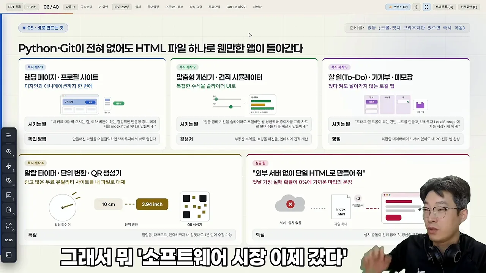
한계도 말해요. 혼자 쓰거나 지인끼리 쓸 정도는 금방 만들지만, 판매할 수준으로 고도화하기는 여전히 어렵다고 해요.
설치하고 폴더와 무료 모델 고르기
설치는 평범해요. opencode.ai의 첫 화면에서 데스크탑 버전을 받으면 돼요. 화면 왼쪽 아래 'Download for Windows' 목록에서 Windows x64를 골랐어요. 맥과 리눅스도 지원해요.
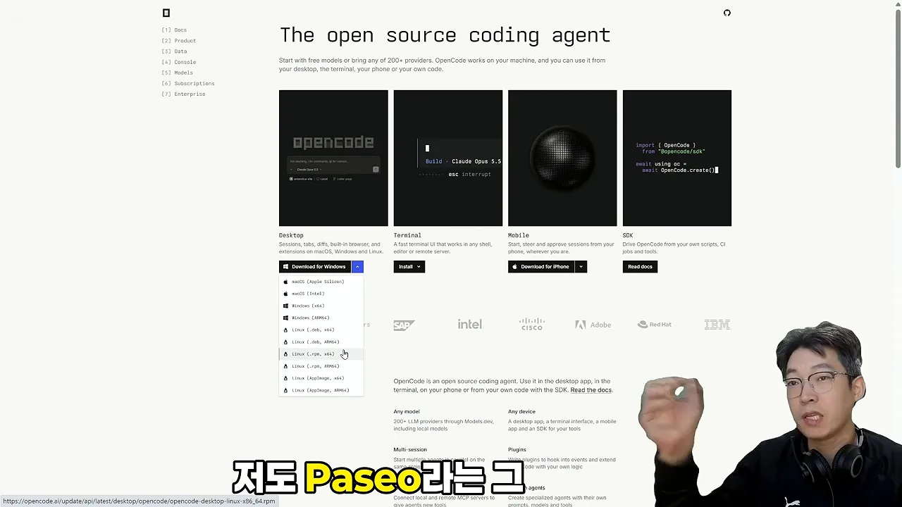
받은 설치 파일을 실행하면 '설치하고 있습니다, 잠시 기다려주십시오' 창이 떠요. 슬라이드 왼쪽 03번 '기다린다' 칸에는 막대가 차면 끝, 네모난 로고가 뜨면 성공이라고 적혀 있어요.
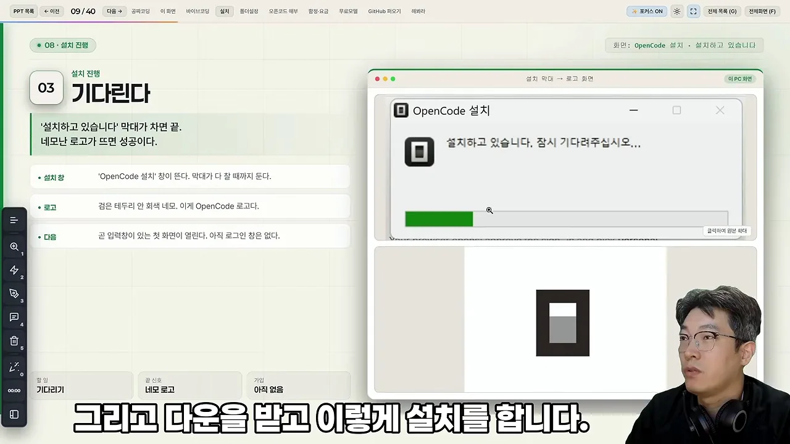
작업 폴더를 정하면 설정 끝
발표자가 가장 중요하다고 강조하는 게 폴더예요. 화면 아래 '기본 프로젝트'를 누르면 ② 지금 열린 기본 폴더와 ③ '프로젝트 추가 = 내 폴더 열기' 메뉴가 보여요.
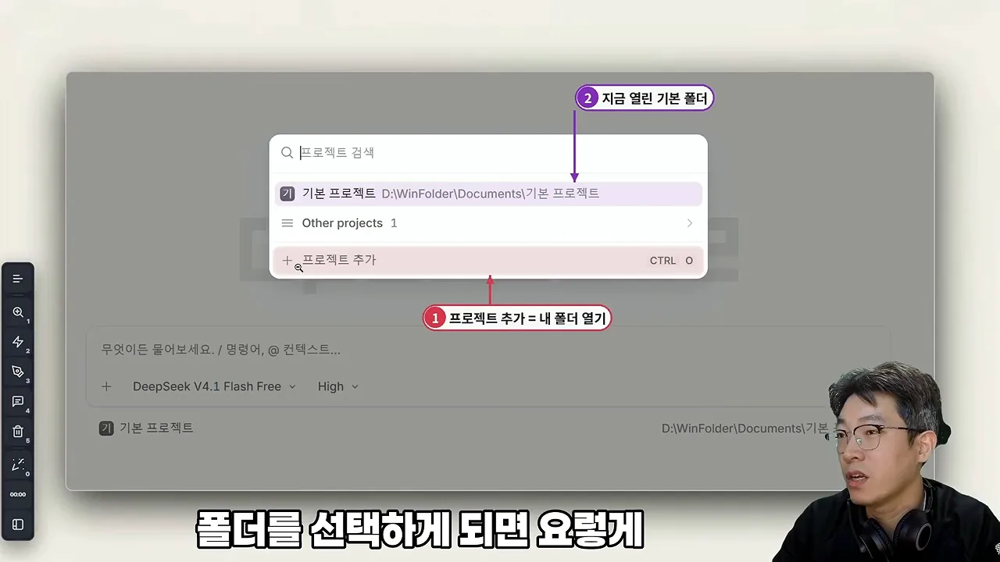
프로젝트 추가를 누르면 윈도우 폴더 선택 창이 열려요. 영상은 D드라이브의 005_zombie 안에 있는 001_opencode 폴더를 골랐어요. 쓰던 폴더를 골라도 돼요.
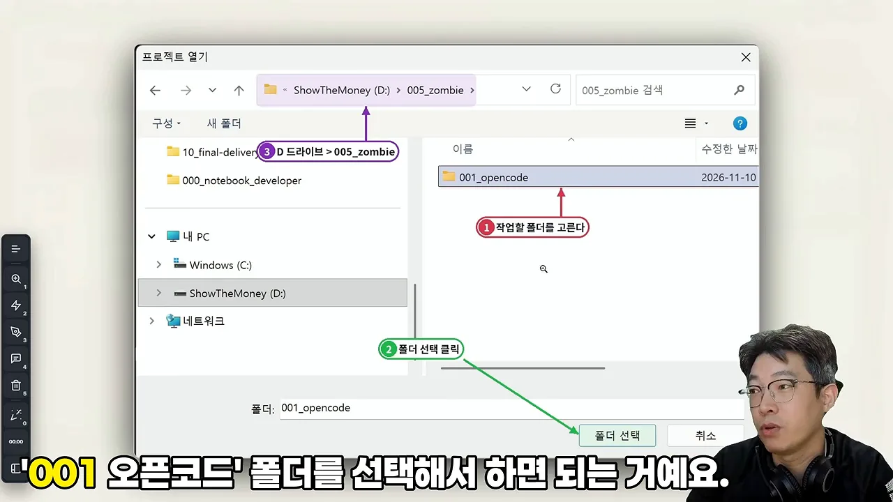
왜 굳이 로컬 프로그램이냐는 질문에도 답해요. 웹에서 쓰는 챗GPT·클로드·제미나이와 달리, 로컬 프로그램이어야 내 컴퓨터에 파일을 만들고 열고, 이미지와 영상도 읽고 편집할 수 있어요.
무료 모델 고르기
모델 검색 창에서 위쪽 'OpenCode Go'와 Kimi K3는 유료라 빼요. 아래로 내리면 'OpenCode' 묶음이 있고, 여기에 '무료' 표시가 붙은 모델이 모여 있어요. 영상은 'DeepSeek V4.1 Flash Free'를 고르고 오른쪽 추론 강도를 '기본값'에 뒀어요. High나 Max는 무료 한도가 빠듯할 거라고 해요.
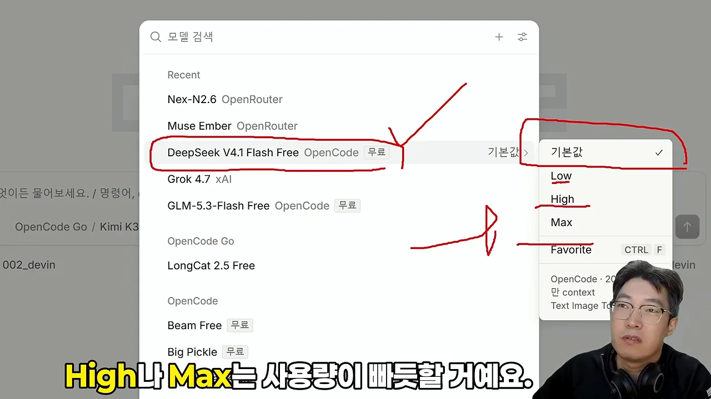
발표자는 무료 모델 가운데 DeepSeek V4.1 Flash와 Big Pickle 두 개면 충분하다고 봐요. Big Pickle은 오픈코드 자체 모델일 거라고 짐작해요. OpenCode Go는 오픈코드의 월 10달러짜리 유료 묶음이라 싸다고 소개해요.
유료 모델을 골라도 돈이 나가지 않아요
실수로 유료 모델을 골라도 안심해도 된다는 게 이 대목의 요지예요. 잔액이 0이면 결제되는 대신 그냥 막혀요. 슬라이드 '갑자기 잔액 부족'이 발표자가 실제로 겪은 일이에요. 오픈코드 콘솔에 연결하자 첫 모델이 Muse Ember 1.0으로 바뀌어 있었고, 이름에 Free가 없어서 'Insufficient account funds' 오류가 떴어요.
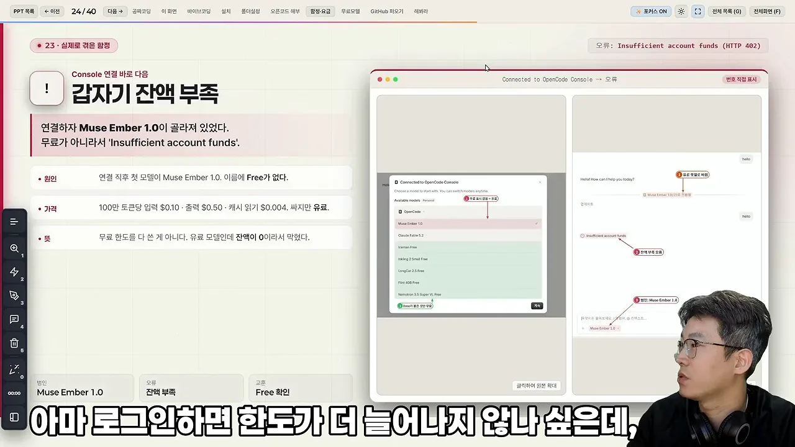
로그인은 나중에 해도 돼요. 발표자는 로그인하면 한도가 늘지 않을까 짐작만 해요. 오픈코드 홈페이지의 가격표에는 무료 모델이 노란 'Free' 표시로 모여 있어요.
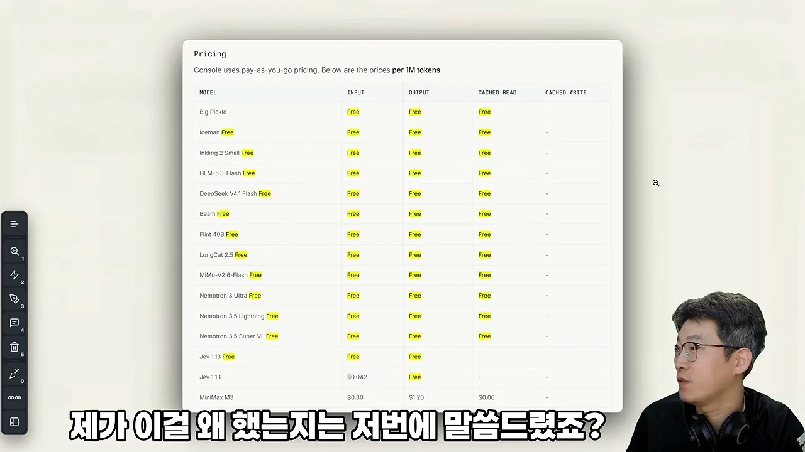
깃허브 저장소를 통째로 가져오기
지난 영상이 말로 직접 만드는 거였다면, 이번엔 깃허브에서 남이 만든 프로그램을 통째로 가져와요. 슬라이드는 깃허브를 '남이 만든 프로그램이 통째로 공개된 창고'라고 소개해요. 왼쪽 세 줄이 보는 법이에요. 프로그램 하나가 저장소(repo) 폴더 하나이고, Trending에서 Date range를 Today로 두면 오늘 별이 몰린 저장소가 보여요. 그리고 공개돼 있다고 마음대로 써도 되는 건 아니에요.
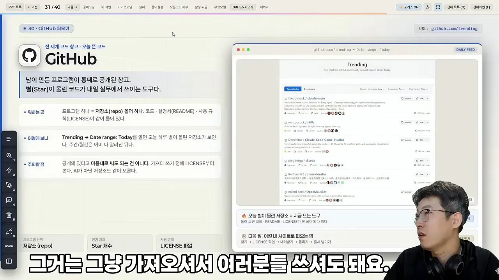
LICENSE 파일이에요. 영상 14:52에서 보기다음 슬라이드가 가져오는 순서예요. 위쪽 여섯 칸이 찾기 → LICENSE 확인(MIT·Apache면 OK) → 내려받기(ZIP 또는 git clone) → 종류 보기(정적형인지 빌드형인지) → 사이트의 apps/이름/ 폴더에 넣기 → 출처 남기기예요. 오른쪽에 뜬 카드가 '제일 편한 길'이에요. 이 과정을 말 한 줄로 오픈코드에 시키는 거예요.
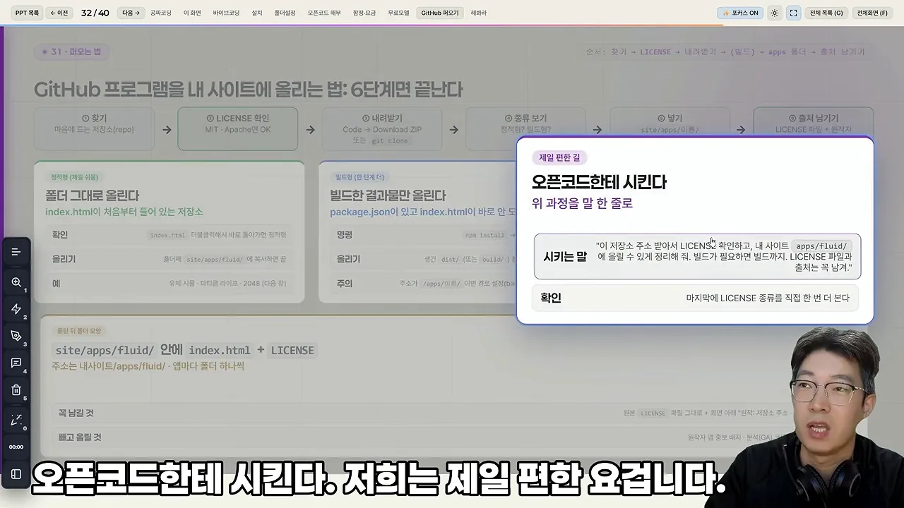
LICENSE를 확인하고, apps/fluid/에 올릴 수 있게 정리하고, 필요하면 빌드하고, LICENSE와 출처를 남기라는 내용이에요. 마지막 줄 '확인'은 사람이 LICENSE 종류를 한 번 더 보라는 거예요. 영상 15:12에서 보기첫 실습: WebGL 유체 시뮬레이션
첫 대상은 PavelDoGreat의 WebGL-Fluid-Simulation이에요. 저장소 화면 오른쪽 위에 Star 16.8k, Fork 1.9k가 보이고, About 칸에 MIT license가 적혀 있어요. 파일 목록 오른쪽 날짜를 보면 '9 years ago'까지 있어요. 9년 동안 유지된 저장소라는 뜻이에요.
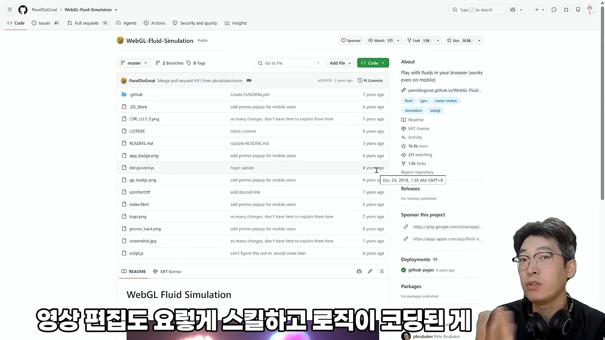
하는 일은 단순해요. 브라우저 주소창의 저장소 주소를 Ctrl+C로 복사하고, 미리 세팅해 둔 오픈코드 입력창에 붙여 넣은 다음 한 줄을 덧붙여요.
야, 이거 좀 설치해 줘. 랜딩 페이지의 적당한 곳에 메뉴 들어가는 버튼도 잊지 말고 넣어줘.
— 영상 17:02
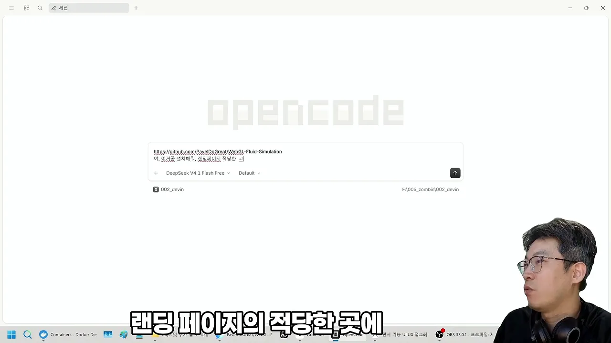
잠시 뒤 AI가 저장소를 받아 로컬 서버로 띄웠어요. 화면 가득 형광색 유체가 마우스를 따라 번지고, 오른쪽에는 원래 저장소에 있던 설정 패널이 그대로 붙어 있어요.
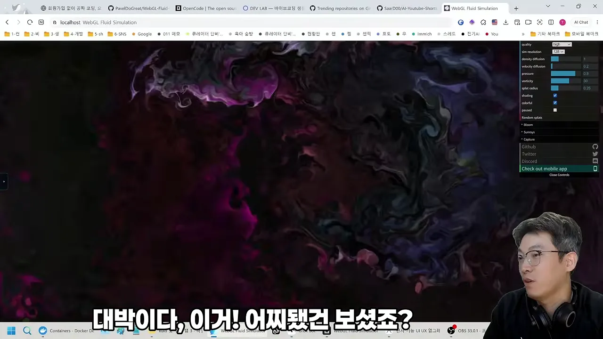
"배포해 줘" 한마디로 라이브
사이트 설정은 AI에게 물어보면 된다며 바로 "야, 배포해 줘"라고만 쳤어요. 오픈코드가 일하는 과정이 그대로 보여요. 위에서부터 생각 1초, DEPLOY.md와 deploy-sample.ps1 읽기, 다시 생각, 그리고 PowerShell로 배포 스크립트를 두 번 실행해요.
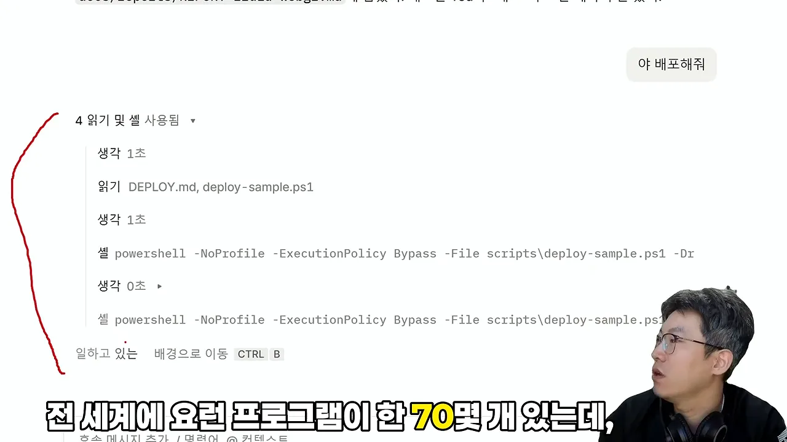
DEPLOY.md)을 만들어 둬서, AI가 그걸 읽고 그대로 따라 해요. 첫 실행 줄은 끝이 '-Dr'에서 잘려 있어요. 배포가 끝난 뒤 보고에는 '-DryRun 먼저'라는 사전 점검 단계가 적혀 있어요(다음 섹션 첫 화면 위쪽). 영상 20:32에서 보기얼마 지나지 않아 배포가 끝났어요. 샘플 사이트 왼쪽 메뉴 맨 위에 'FLUX 유체 시뮬레이션'이 새로 생겼어요. 발표자는 예전엔 배포(디플로이)라는 말만 들어도 다들 질색했는데, 이제는 말 한마디면 된다고 말해요.
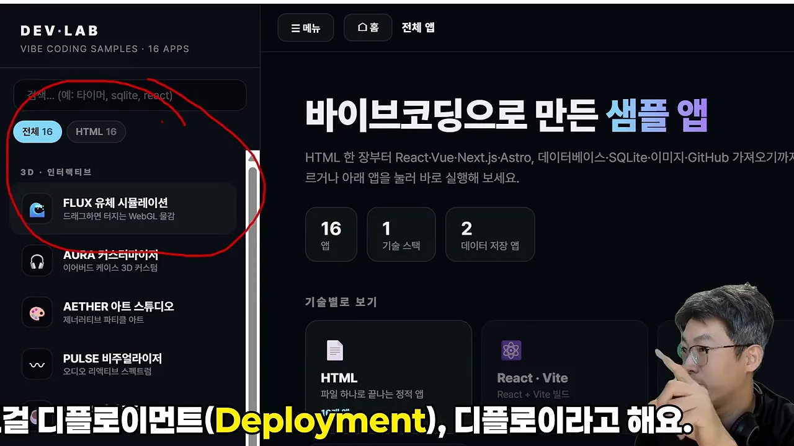
지금까지 흐름을 한 장에 모으면 이래요. 사람이 하는 건 주소 복사와 두 마디뿐이에요.
flowchart LR A["깃허브 저장소 주소 복사"] --> B["오픈코드에 붙여넣고
'설치해 줘'"] B --> C["AI가 받아서
로컬에서 띄움"] C --> D["'배포해 줘'"] D --> E["사이트에 라이브"] A -.-> L["LICENSE 확인
(사람 몫)"]
라이선스: MIT·Apache는 되고 AGPL은 조심
가져오는 것보다 중요한 게 라이선스예요. 남이 만든 것이니까요. 슬라이드 제목이 이 섹션의 결론이에요. '공개돼 있다고 다 공짜가 아니다: 올리기 전에 LICENSE부터 본다.' 왼쪽 표가 라이선스별로 내 사이트에 올려도 되는지 정리한 거예요.
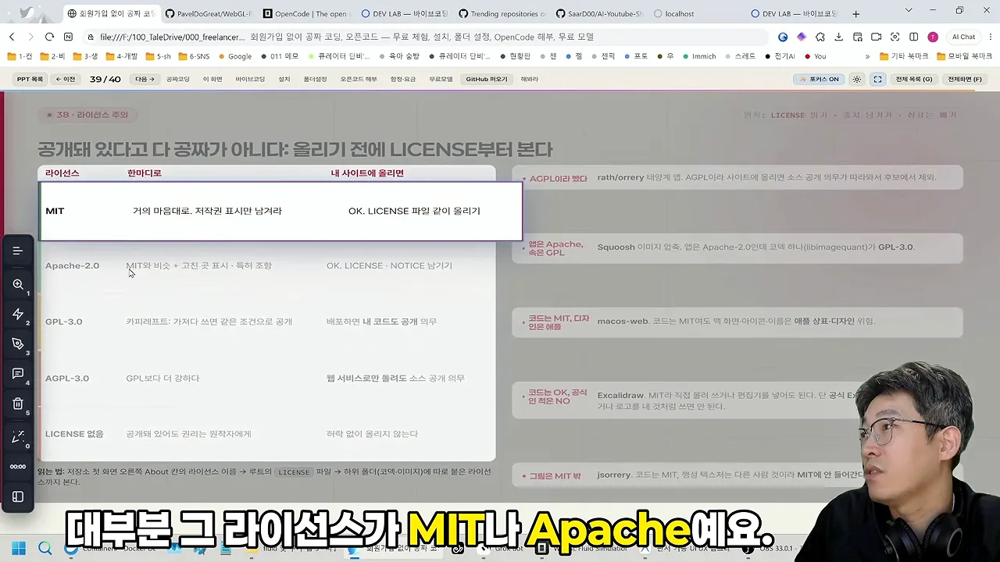
표가 작아서 글로 옮겨 둘게요.
| 라이선스 | 한마디로 | 내 사이트에 올리면 |
|---|---|---|
| MIT | 거의 마음대로. 저작권 표시만 남겨라 | OK. LICENSE 파일 같이 올리기 |
| Apache-2.0 | MIT와 비슷 + 고친 곳 표시·특허 조항 | OK. LICENSE·NOTICE 남기기 |
| GPL-3.0 | 카피레프트: 가져다 쓰면 같은 조건으로 공개 | 배포하면 내 코드도 공개 의무 |
| AGPL-3.0 | GPL(GNU General Public License)보다 더 강하다 | 웹 서비스로만 돌려도 소스 공개 의무 |
LICENSE 없음 | 공개돼 있어도 권리는 원작자에게 | 허락 없이 올리지 않는다 |
오른쪽 사례 카드도 눈여겨볼 만해요. 앱은 Apache인데 속에 든 코덱 하나가 GPL-3.0인 Squoosh, 코드는 MIT여도 맥 화면·아이콘·이름은 애플 상표라 위험한 macos-web, 코드는 써도 공식 이름과 로고는 내 것처럼 쓰면 안 되는 Excalidraw처럼, 한 저장소 안에서도 규칙이 갈릴 수 있어요. 슬라이드 아래 '읽는 법'은 저장소 첫 화면 About 칸 → 루트의 LICENSE 파일 → 하위 폴더에 따로 붙은 라이선스 순서로 보라고 해요.
MIT는 문구만 같이 넣으면 돼요
유체 시뮬레이션 README를 맨 아래까지 내리면 'The code is available under the MIT license'라는 줄이 있어요. LICENSE 파일을 열면 표준 MIT 문구가 나와요. 맨 위 'Copyright (c) 2017 Pavel Dobryakov'가 원작자이고, 가운데 문단이 쓰고·고치고·합치고·배포하고·팔아도 된다는 허락, 그 아래가 이 문구를 함께 넣으라는 조건이에요.
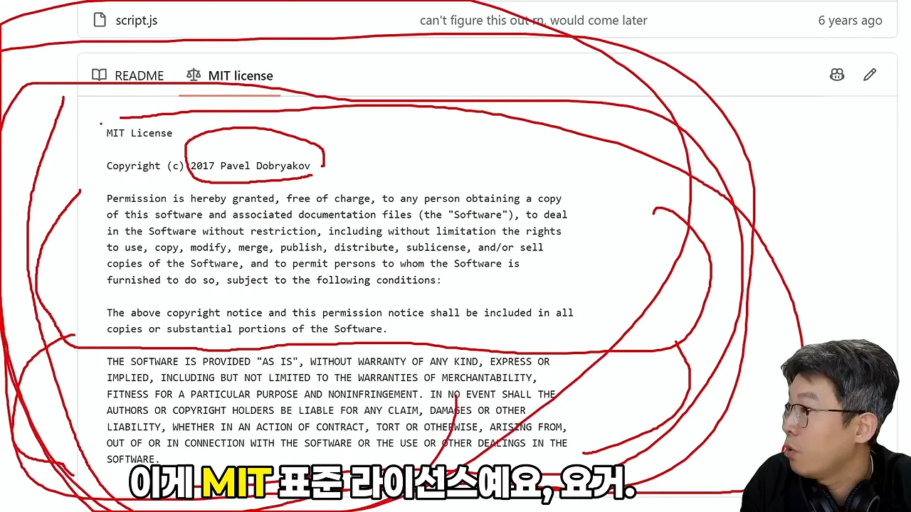
반디집이나 픽픽 같은 프로그램도 오픈소스를 쓰면 README나 라이선스 파일에 크레딧을 남겨요. 내 사이트도 마찬가지예요.
AGPL은 왜 조심해야 할까요
발표자는 AGPL을 "전염된다"고 표현해요. AGPL 코드를 서버에 올려 서비스하면 그 서비스의 소스를 공개해야 하기 때문이에요. 발표자가 예전에 소개한 사주 앱이 바로 이 경우라서 사이트 후보에서 뺐어요. 아래 그림은 영상 설명을 두 경우로 나눠 본 거예요.
포크는 괜찮아요
소스를 내 쪽으로 가져오거나 고쳐서 다른 걸로 만드는 걸 포크(Fork)라고 해요. 저장소 오른쪽 위 Fork 버튼이 그거예요. 이 저장소는 1.9k번 포크됐어요. MIT라면 포크도 괜찮다고 해요.
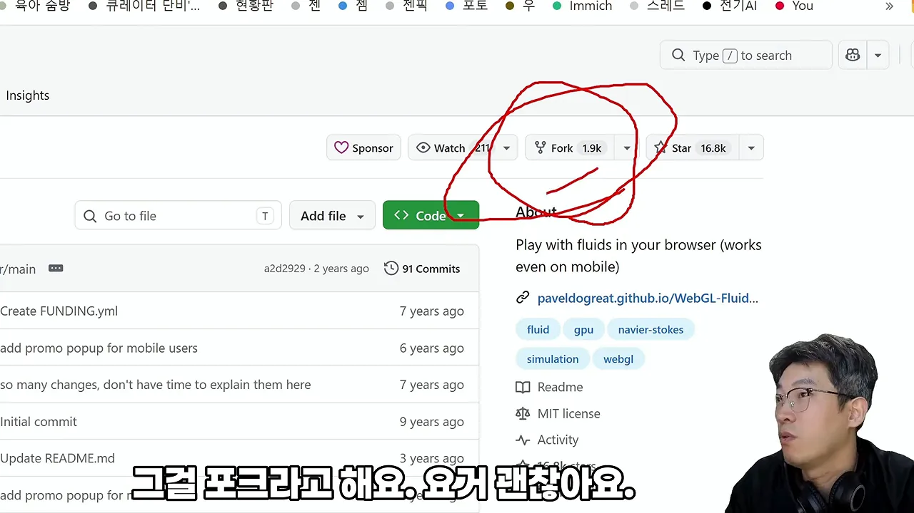
파티클 라이프와 토큰 비용
두 번째는 hunar4321의 particle-life예요. 슬라이드 설명대로 점들끼리 '당긴다·민다' 규칙만 줬는데 세포 같은 무리가 저절로 생기는 인공 생명 시뮬레이션이에요. 왼쪽 네 줄이 가져오기 전에 볼 것들이에요. 라이선스는 MIT, 빌드 없이 HTML 파일 2개만 가져오면 되고, 함께 든 exe·zip(약 42MB)은 올리지 않아요. 화면 도구를 인터넷(CDN(Content Delivery Network))에서 불러와서 오프라인에선 안 된다는 주의도 있어요.
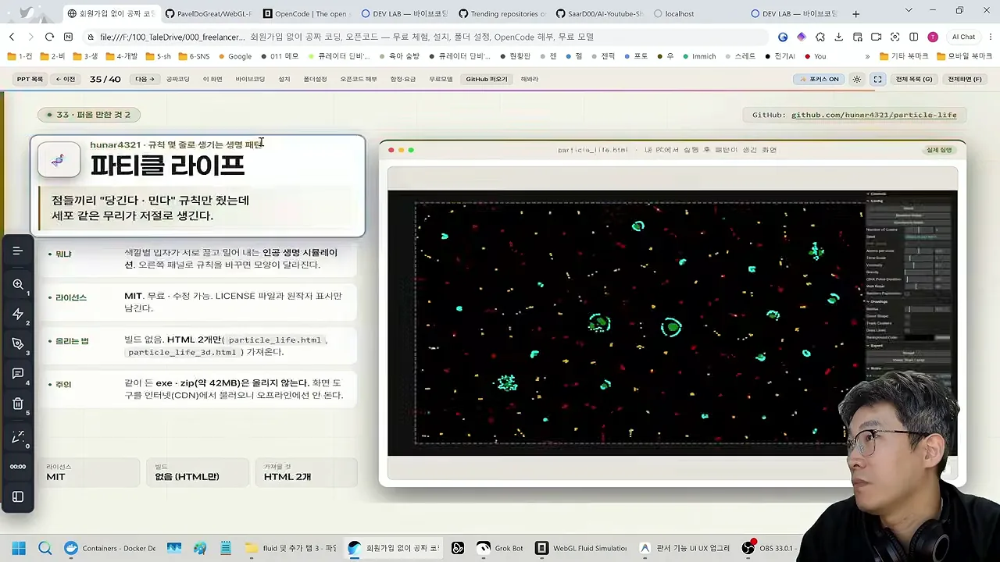
방법은 똑같아요. 주소를 복사해 오픈코드에 붙이고 "야, 이거도 해줘, 버튼도 만들어줘"라고만 썼어요. 같은 화면 위쪽은 앞에서 배포한 유체 시뮬레이션의 검증 보고예요. -DryRun으로 먼저 백업하고 점검했고, 업로드 34개 중 11개가 새 파일, 라이브 경로 19개가 모두 200 응답, DEPLOY-LOG.md에 기록됐다고 적혀 있어요. 되돌리려면 Cloudflare Pages에서 직전 배포로 Rollback 하면 된다는 안내까지 붙어 있어요.
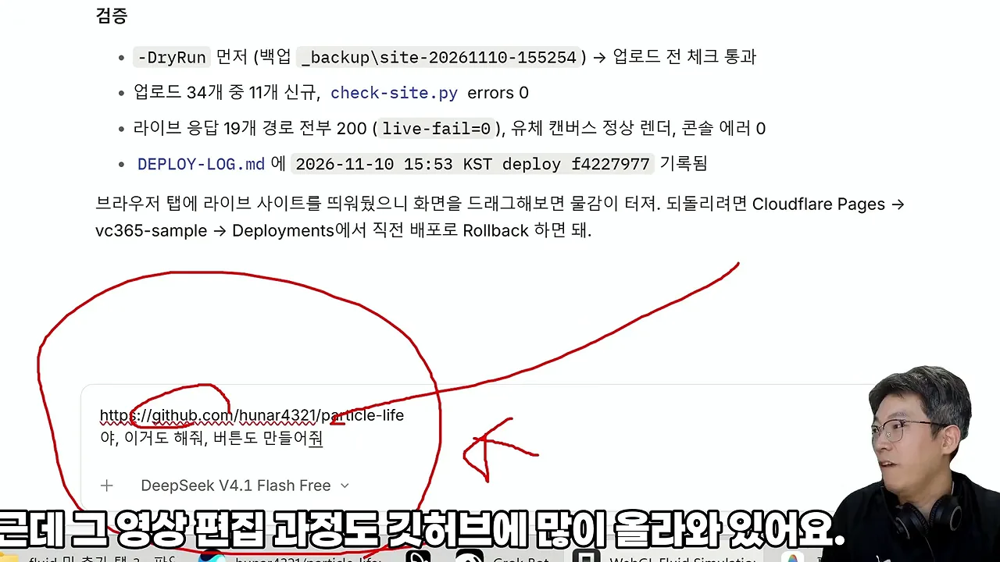
발표자는 남이 만든 걸 가져오면 토큰 소모가 크게 줄어든다고 말해요. 내가 처음부터 개발하는 게 아니니까요. MIT라면 가져온 뒤 직접 고쳐서 업그레이드해도 되고, 라이선스 파일만 넣으면 돼요.
악성코드 이야기도 여기서 나와요. 영상 편집 스킬처럼 깃허브에 올라온 자동화 절차에도 악성코드가 섞여 있을 수 있어요. 그럴 땐 가져올 때 "악성코드 있는지 확인하고 잘 확인해서 가져와"라고 함께 시키면 된다고 해요.
개발자들은 왜 공개할까요
스타가 쌓이면 스폰서가 붙고, "같이 개발하자"는 연락이 오고, 인수 제안도 들어온대요. 발표자는 OpenClaw와 Cursor의 인수를 예로 들어요. 더 근본적으로는 개발자들이 일하면서 서로 신세를 지고 배우는 문화라고 설명해요. 라이선스를 무시하고 베끼면 안 되지만, 공개된 조건 안에서 업그레이드하는 건 괜찮다는 거예요.
이번 작업은 얼마어치였을까요
AI가 로컬 테스트까지 마쳤고, "배포해 줘" 한마디로 사이트에 올라갔어요. 메뉴 두 번째 줄에 'PRIMORDIA 파티클 라이프'가 생겼고, 오른쪽에는 원래 저장소의 규칙 조정 패널이 그대로 있어요.
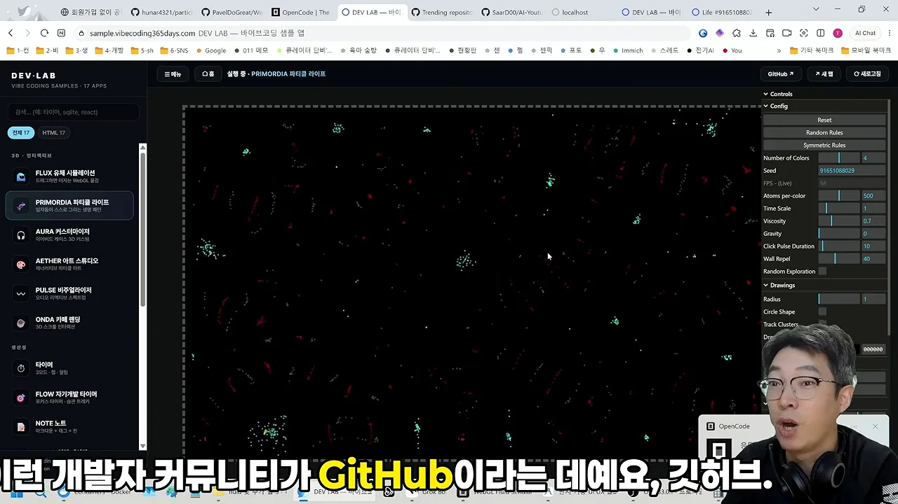
FLUX 바로 아래에 자리 잡았어요. 영상 27:48에서 보기배포를 기다리며 발표자가 계산기를 두드려요. 영상이 말한 숫자를 그대로 옮기면 이래요.
| 항목 | 영상의 숫자 |
|---|---|
| DeepSeek 요금 | 100만 토큰당 약 0.4달러 |
| 원화로(환율 1,350원) | 100만 토큰당 540원 |
| 지금까지 쓴 토큰 | 약 10만 토큰 = 100만의 10분의 1 |
| 이 작업의 값 | 약 54원, 그런데 무료 모델이라 0원 |
뭘 하는 프로그램인지 잘 모르겠다면 AI에게 물어보면 돼요. "이 개발자는 이걸 왜 만들었을까? 이거 어떻게 쓰면 될까?" 하고요. 깃허브에는 매일 수만에서 수십만 개 소스가 올라온다며, 이렇게 묻는 습관이 깃허브를 쓰는 핵심이라고 말해요.
트렌딩에서 고르고, AI에게 먼저 물어보기
남이 만든 것 중 무엇을 가져올지는 깃허브 트렌딩(Trending)에서 고르면 돼요. 오른쪽 위 Date range를 오늘·이번 주·이번 달로 바꾸면 그 기간에 스타가 가장 많이 붙은 저장소 순서로 보여요. 발표자는 깃허브를 단순한 코드 창고가 아니라, 남의 걸 가져와 변형하고 응용하면서 배우는 개발자 커뮤니티라고 소개해요.
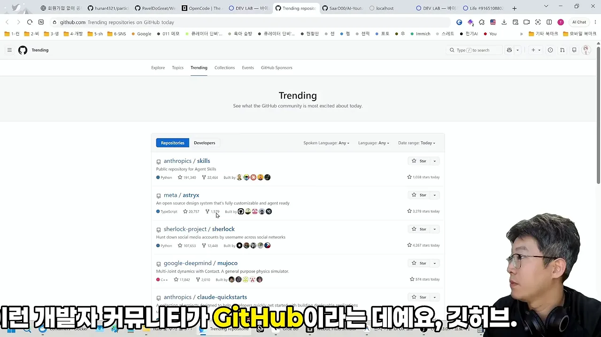
모르면 설치하지 말고 먼저 물어봐요
여기서 가장 중요한 습관이 나와요. 처음 보는 저장소는 바로 설치하지 않고, 주소를 주며 "야, 이건 설치하지 말고 이게 뭐야?"라고 물어요. 영어, 중국어, 일본어로 쓰여 있어도 상관없어요. 발표자는 깃허브가 네이버·쿠팡처럼 로봇 접근을 막지 않아서 AI가 내용을 읽기 편하다고 덧붙여요.
AI의 답이 화면에 나와요. 첫 줄에서 '설치는 안 했어, 이건 CLI(터미널) 프로그램이라 우리 샘플 사이트에 넣을 수 있는 종류가 아니야'라고 먼저 판단하고, 그 아래 Sherlock이 아이디 하나를 400개 넘는 SNS(Social Network Service)·커뮤니티에서 찾아보는 OSINT(Open Source Intelligence) 도구라고 설명해요. Python 터미널 프로그램, MIT 라이선스, 스타 10만 이상이라는 정보와 동작 방식 네 단계, 예시 명령까지 붙어 있어요.
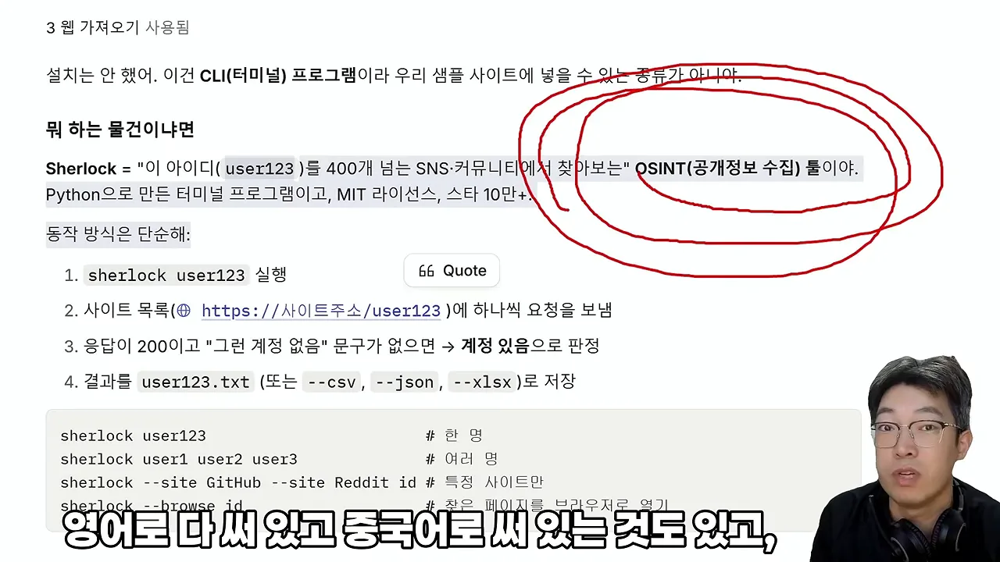
이번 달 인기: REA와 보안 감사 스킬
기간을 '이번 달'로 바꾸면 맨 위가 morluto/rea예요. 화면에는 누적 스타 447,816개, 이번 달에만 413,718개가 붙었다고 나와요. 발표자가 말한 '41만 개'가 이 숫자예요. 그 아래 Nutlope/hallmark, cloudflare/security-audit-skill이 이어져요.
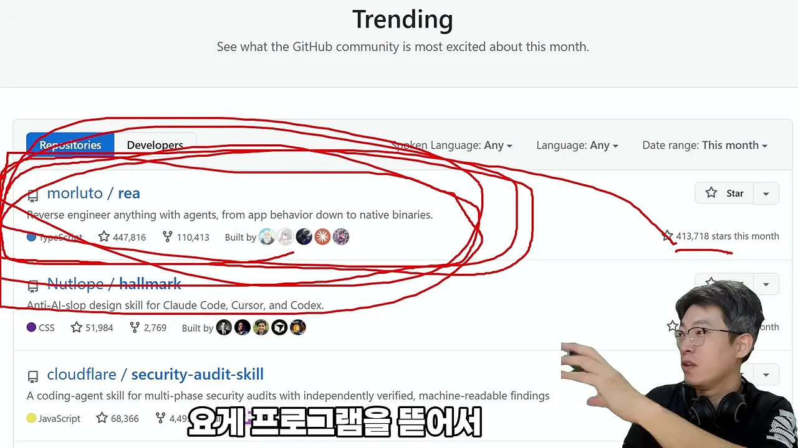
REA는 프로그램을 뜯어서 재구성하는 리버스 엔지니어링 도구예요. 발표자는 이걸 위험하다고 보고, 요즘 이걸 쓰면 클로드 계정이 정지된다고까지 말해요. 다만 이건 발표자의 주장이고, 영상은 근거를 보여 주지 않아요.
세 번째 cloudflare/security-audit-skill은 AI에게 다시 "이건 뭐야?"라고 물었어요. 답은 AI 에이전트용 보안 감사 스킬이고, 코드가 아니라 문서와 검증기 묶음이라는 거예요. 화면의 파일 목록을 보면 SKILL.md(진입점), 정찰 프롬프트, 공격 유형별 문서, AI·LLM(Large Language Model) 취약점 문서, 결과를 검사하는 validate-findings.cjs가 들어 있어요.
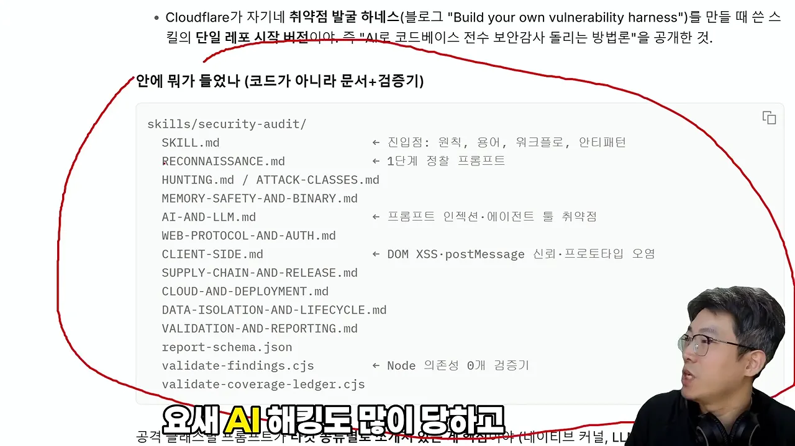
발표자는 AI 코딩을 하면 개인정보가 새거나 위험한 코드가 섞일 수 있다며, 이런 감사 스킬은 깔아 두면 좋다고 해요. 설치가 필요하면 "설치해 줘" 한마디면 되고, 프로젝트 폴더 안에 생겨요. 탐색기에서 프로젝트 폴더를 열면 .opencode 폴더가 보이고, 스킬은 이런 에이전트 설정 폴더 안에 자리 잡아요.
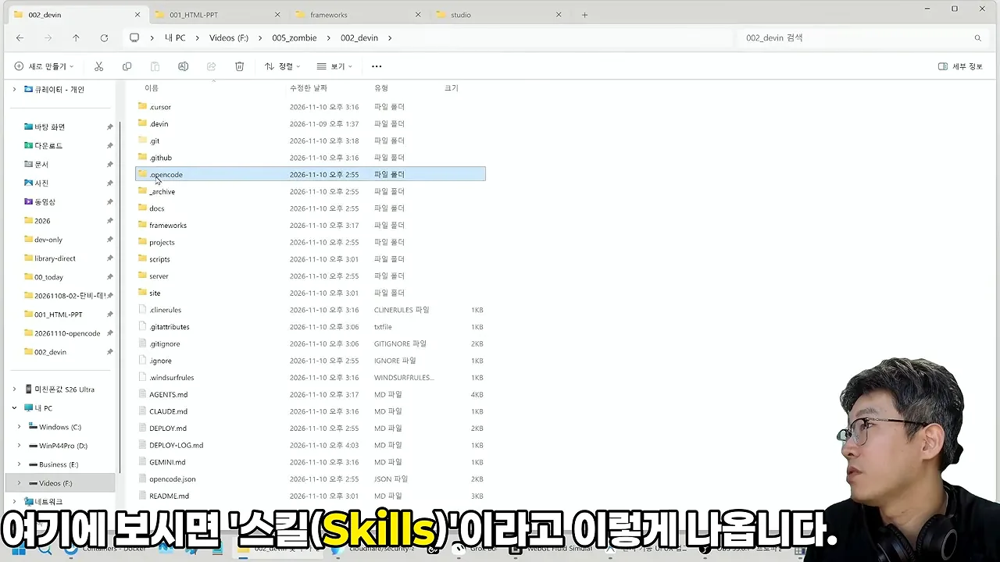
DEPLOY.md와 DEPLOY-LOG.md도 여기 있어요. 영상 30:46에서 보기2048 게임과 추론 과정
세 번째 실습은 gabrielecirulli의 2048이에요. 슬라이드 설명은 '같은 숫자끼리 밀어서 합치는 그 게임. 폴더째 올리면 폰 스와이프까지 된다'예요. 라이선스 줄에는 MIT라서 LICENSE.txt와 원작자 표시를 남기고, 원작자의 공식 앱이 따로 있으니 '공식 2048'처럼 쓰지 말라고 적혀 있어요. 발표자는 13년 전 코드라며 놀라요. 이 코드를 바탕으로 많은 2048 앱이 나왔을 거라고 해요.
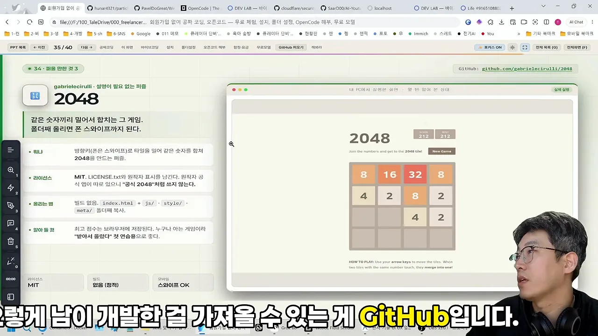
README를 내려 보면 'You win!' 화면 아래로 기여 안내(Contributing)가 이어지고, 그 아래에 후원 안내가 있어요. 이 저장소는 비트코인 주소를 적어 뒀어요. 코드를 공개하고 '이걸로 개발하고 마음에 들면 후원해 주세요'라고 하는 게 깃허브 문화라고 발표자는 말해요. 라이선스를 숨기고 내가 만든 것처럼 하면 안 되는 건 당연하고요.
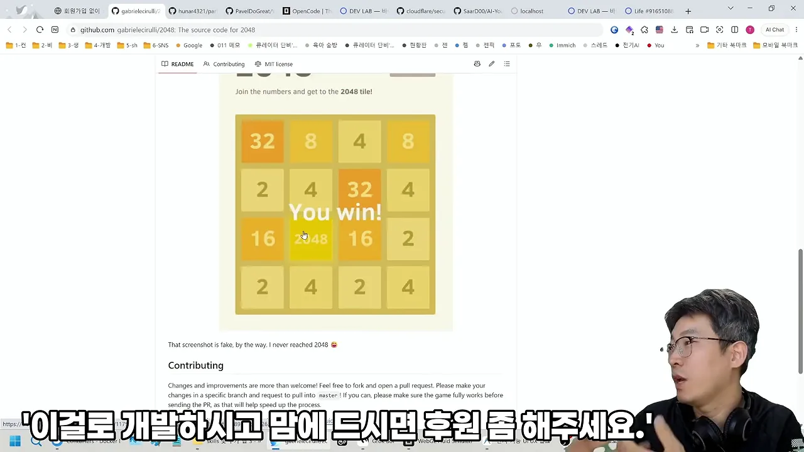
AI가 생각하는 과정, 추론
"야, 이거 설치해 줘"를 보내고 기다리는 동안, 오픈코드는 AI가 무슨 생각을 하는지 그대로 보여 줘요. 화면의 '생각 2초' 아래 영어 문장들이 그 내용이에요. 합치기가 4를 만들고 점수 4가 올랐고 새 타일이 생겼다며 게임 로직이 동작한다고 확인해요. 이어서 내비게이션과 랜딩 카드를 확인하고, /apps/2048/index.html을 직접 열어 스크린샷을 찍고, 보고서를 쓴 뒤 배포할지 묻겠다는 계획을 세워요.
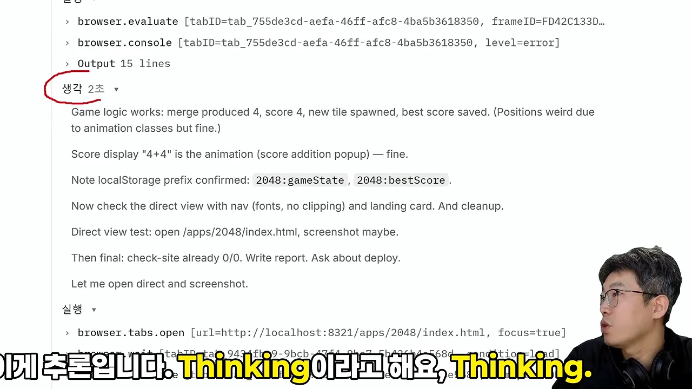
발표자는 이걸 추론(Thinking)이라고 설명해요. 코드를 내기 전에 어떤 코드를 어떻게 배치하고 계산할지 스스로 생각하는 과정이에요. 강도는 Low부터 Max까지 고를 수 있어요. 무료 DeepSeek은 지난 영상의 데빈보다 느렸지만 생각을 많이 하면서 결국 해냈어요. 화면 오른쪽 위 토큰 표시로는 12만, 14만 정도만 썼다고 해요.
"배포해 줘" 뒤에 사이트에서 2048을 바로 해 봤어요. 메뉴에 2048이 생겼고, 게임판에서 타일을 밀어 숫자를 합칠 수 있어요.
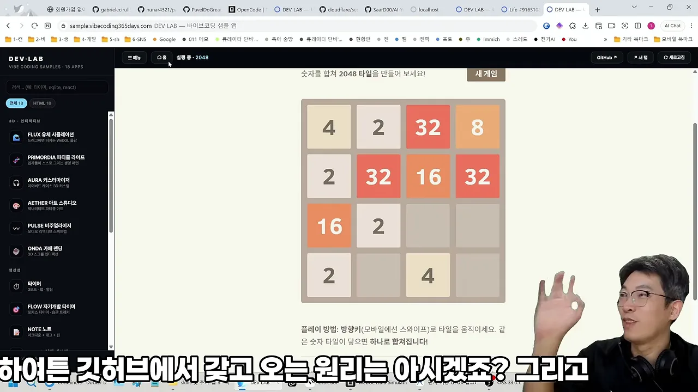
무료로 먼저 손에 익혀요
발표자는 최근 나온 비싼 모델(Claude Fable 5.2)을 쓰면 솔직히 더 잘 된다고 인정해요. 그래도 순서는 무료 체험이 먼저래요. 체험 없이 구독부터 하면 뭘 할지도 모른 채 한 달이 지나가 돈만 날려요. 무료로 써 보고 할 일이 그려진 다음에 돈을 쓸지 정하라는 거예요.
K-Skill과 정리 네 단계
마지막 실습은 한국 개발자가 만든 스킬 모음집 K-Skill(NomaDamas/k-skill)이에요. 스킬은 어떤 업무를 정해진 순서대로 하라고 적어 둔 절차서예요. README 위쪽 배지에 깃허브 트렌딩 '#1 Repository Of The Day'와 Trendshift의 일간·주간·월간 순위가 붙어 있어요. 그 아래 소개 문장이 발표자가 그대로 읽은 부분이에요.
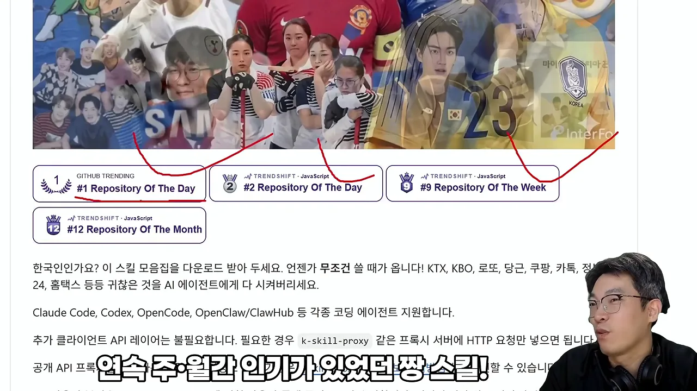
발표자는 몇 달 만에 스타 8,400개를 받은 걸 강조해요. 앞에서 말했듯 스타 받기는 정말 어려워서요. 스킬 목록에는 고속버스·시외버스 예매, 항공권 가격, 인허가 영업 상태 조회, 장수 점포 레이더, 창업진흥원 공고, 정부 지원 전수조사, 잡코리아 인재 검색, KOSIS(Korean Statistical Information Service) 통계 조회, 쿠팡 상품 검색 같은 게 들어 있어요. 표 한 줄이 스킬 하나이고, 가운데 칸이 스킬 이름, 오른쪽 칸이 무엇을 어디서 조회하는지예요.
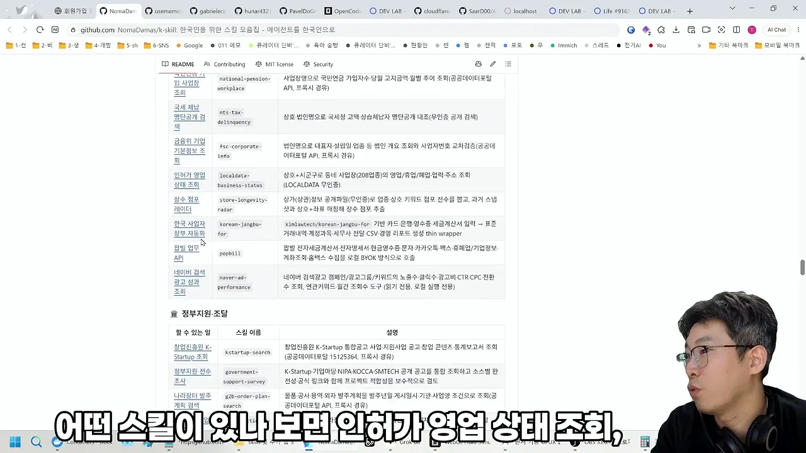
설치도 똑같아요. 메모장에 저장소 주소와 "야, 스킬 설치해줘"를 적어 두고 오픈코드에 붙여 넣으면 돼요.
다시 한 번, 올리기 전에 라이선스
마무리에서 발표자는 라이선스 표를 다시 띄우고 한 번 더 못 박아요. 대표적인 라이선스는 MIT, Apache, GPL, AGPL이고, 그중 AGPL이 가장 강력해서 상용으로 쓰기엔 까다롭다는 거예요.
정리: 오픈코드 네 단계
마지막 슬라이드가 오늘 내용을 네 장의 카드로 묶어요. 1 깐다(설치 파일, 가입·카드 없음), 2 폴더를 연다(001_opencode), 3 말로 시킨다(할 일 체크리스트 만들어 줘 같은 한 줄), 4 넓힌다예요. 화면은 4번 카드가 펼쳐진 순간이에요. Plan, 터미널, AGENTS.md가 적혀 있어요.
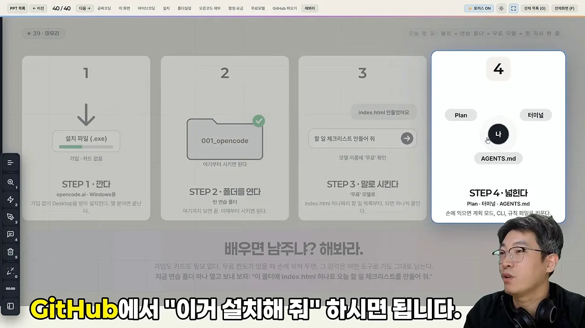
발표자는 이 PPT(PowerPoint)를 영상 편집을 줄이려고 HTML로 만들었다고 해요. 녹화하면서 누르면 그림이 튀어나오게 해서, 나중에 편집으로 자막과 그림을 넣는 일을 없앤 거예요. 응용 예도 하나 들어요. 이 영상 편집도 지난 영상의 편집 스타일 그대로 "이거 편집해 줘"라고 오픈코드에 맡길 거래요. 오늘 배운 설치·코딩·배포가 그런 일로 넓어진다는 거예요.
결론은 단순해요. 할 수 있을지 고민하기보다 할지 말지만 정하고 일단 해 보라는 거예요. 직접 해 봐야 내 무기가 된다는 말로 끝나요.